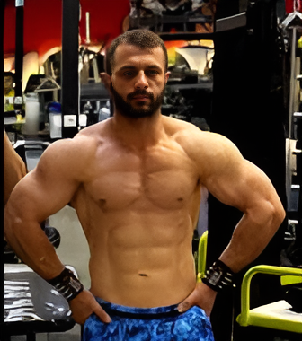

زمان سپریشده از نبودن مهدی
۰
روز
۰
ساعت
۰
دقیقه
۰
ثانیه
مهدی رحیمی | ۳۲ ساله | دزفول
مهدی رحیمی
نام کاملمهدی رحیمی
سن۳۲ سال
محل جانباختنخیابان قاضی، دزفول
تاریخ جانباختن۱۹ دی ۱۴۰۴
محل خاکسپاریاندیمشک، ۲۲ دی ۱۴۰۴
تحصیلاتکارشناسی حسابداری
شغلمربی فیتنس
روایت جانباختن
مهدی رحیمی، ۳۲ ساله، روز جمعه ۱۹ دی ۱۴۰۴ در جریان اعتراضات دزفول هدف شلیک سه گلوله مأموران قرار گرفت و جان باخت. بنا بر اطلاعاتی که ایرانوایر منتشر کرده، مهدی در خیابان قاضی دزفول از بالای یک ساختمان نیمهکاره هدف قرار گرفت و گلولهها به سر، پهلو و پای او اصابت کردند. بر اساس همین گزارش، نگهبان آن ساختمان نیمهکاره نیز با شلیک گلوله کشته شد.
یکی از نزدیکان مهدی به ایرانوایر گفته است خبر جانباختن او زمانی به خانواده رسید که خواهرش در روزهای پایانی بارداری بود. دایی مهدی نیز پس از شنیدن این خبر دچار شوک شد و سکته قلبی کرد.
بنا بر این اطلاعات، مأموران ابتدا اجازه دفن پیکر مهدی در دزفول را ندادند و سپس پیکر او را نیمهشب به خانواده تحویل دادند تا امکان برگزاری مراسم خاکسپاری محدود شود. سرانجام پس از گرفتن تعهد از خانواده، پیکر مهدی تحویل داده شد و او بامداد ۲۲ دی ۱۴۰۴ در آرامستانی در اندیمشک به خاک سپرده شد.
مهدی دارای مدرک کارشناسی حسابداری بود و بهصورت تماموقت در یک باشگاه ورزشی بهعنوان مربی فیتنس کار میکرد. او مجرد بود و بنا بر گفته دوستانش، بیشتر وقت خود را صرف خانواده میکرد. مادرش او را «روله همهچیز خوب» صدا میکرد.
بر اساس اطلاعات منتشرشده، خانواده مهدی پیش از این نیز دو عضو دیگر از فامیل خود را در جریان اعتراضات و بر اثر شلیک گلوله مأموران از دست داده بودند.
منبع: ایرانوایر؛ بر اساس اطلاعات و روایتهای نقلشده در گزارش این رسانه.
برای زنده نگه داشتن یاد مهدی
برای مشاهده روایت و یادبود مهدی، کد را اسکن کنید.